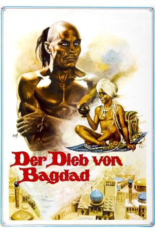

#4017 Der Dieb von Bagdad
Alternativ: The Thief of Bagdad
Auszeichnungen: 3 Oscars gewonnen für 1 Oscars nominiert
 
 IMDB-Wertung: 7.6 / 10
IMDB-Wertung: 7.6 / 10  Metascore: 0
Metascore: 0 
Fantasyabenteuer in Technicolor aus dem Jahr 1940, das einen Oscar für seine Special-Effekte erhielt. Ahmed, der Kalif von Bagdad fällt einer vom Großwesir Jaffar initiierten Verschwörung zum Opfer und soll hingerichtet werden. Zusammen mit dem Dieb Abu gelingt ihm die Flucht nach Basra. Dort verliebt sich Ahmed in die bezaubernde Tochter des Sultans. Sie ist jedoch dem bösen Jaffar versprochen.
Jahr: 1940
Dauer: 106 Minuten
FSK: 6
Land: England Studio: Deutsche London-Film VerleihTonspuren:
Untertitel:
Auflösung: 720p (960x720) Größe: 3184 MB
Genre: Abenteuer, Fantasy, Familie
Regisseur: Ludwig Berger, Michael Powell, Tim Whelan, Alexander Korda, Zoltan Korda, William Cameron Menzies
Drehbuch: Stephen Langford
Soundtrack:
Darsteller:
- Conrad Veidt als Jaffar
- Sabu als Abu
- June Duprez als Princess
- Rex Ingram als Djinn
 Glynis Johns als Princess's maid , uncredited
Glynis Johns als Princess's maid , uncredited Leslie Phillips als Urchin in Bagdad Market , uncredited
Leslie Phillips als Urchin in Bagdad Market , uncredited- John Justin als Ahmad
 Miles Malleson als Sultan
Miles Malleson als Sultan- Morton Selten als The Old King
- Mary Morris als Halima / Six-Armed Lady
- Bruce Winston als The Merchant
- Hay Petrie als Astrologer
- Adelaide Hall als Singer
- Roy Emerton als Jailer
- Allan Jeayes als The Story Teller
- Joseph Cozier als Man Selling Fish , uncredited
- Robert Greig als Man of Basra , uncredited
- Henry Hallett als Citizen , uncredited
- Miki Hood als Citizen , uncredited
- Alexander Laine als Urchin in Bagdad Market , uncredited
- Cleo Laine als Urchin in Bagdad Market , uncredited
- Sylvia Laine als Urchin in Bagdad Market , uncredited
- Spoli Mills als Undetermined Role , uncredited
- Norman Pierce als Undetermined Role , uncredited
- John Salew als Fish Peddler , uncredited
- Mark Stone als Masrur , uncredited
- Frank Tickle als Citizen , uncredited
- Otto Wallen als Undetermined Role , uncredited
- Ben Williams als Citizen , uncredited
Datei: X:\1900-1949\Dieb von Bagdad, Der (1940, FSK6, 960x720).mkv seit 12.07.2016
Festplatte: HD 1900-1970
 Es gibt insgesamt 80 Filme in der Gruppe '1900-1949'
Es gibt insgesamt 80 Filme in der Gruppe '1900-1949'